Genehmigung bearbeiten
Der Einstieg über „Zum Dokument“ öffnet die mobile Formularansicht. Zurück führt wieder zur Genehmigung.
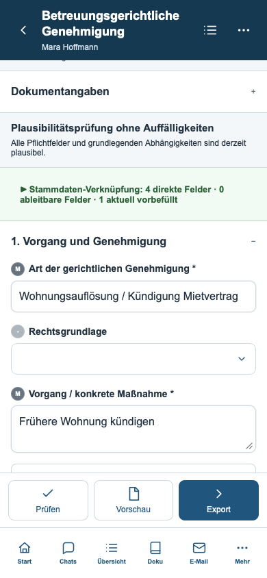
Abschnitte und Felder finden
Die Suche findet auch Felder in geschlossenen Abschnitten und öffnet sie zur Eingabe.
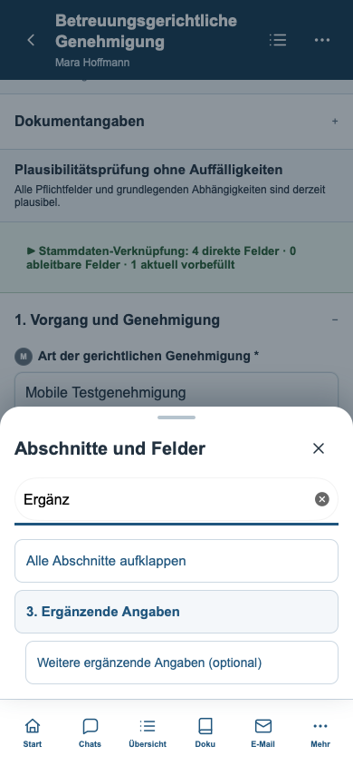
Dokumentaktionen
Die vorhandenen Funktionen für KI, Vorberichte, Archiv und Einstellungen bleiben erreichbar.
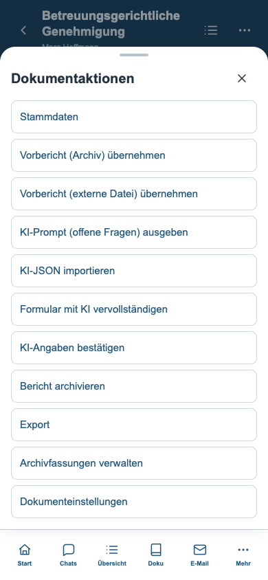
Freies Dokument
Die vorhandene Texteingabe und ihre Formatierungswerkzeuge passen sich der Bildschirmbreite an.
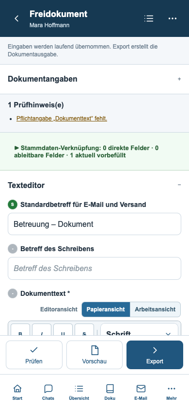
Tabellen bearbeiten
Beschriftete Einträge ersetzen die breite Tabellendarstellung. Die ursprünglichen Berechnungen bleiben aktiv.
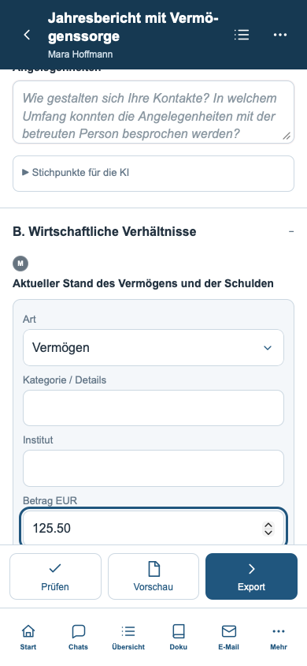
Lange Formulare
Aufklappbare Abschnitte gliedern auch umfangreiche Anträge.
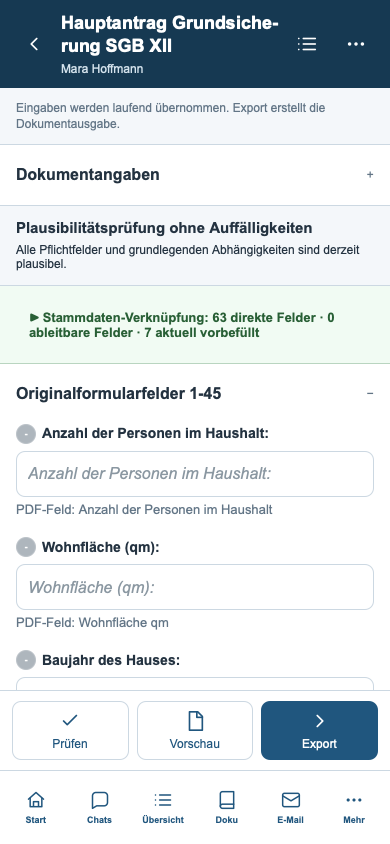
Dunkle Darstellung
Kopfzeile, Abschnitte und Eingaben nutzen die Farben der mobilen Oberfläche.
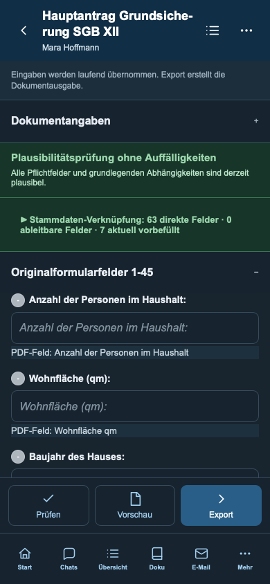
Schmales Smartphone
Die Ansicht passt auch bei 320 Pixeln Breite ohne seitlichen Überlauf.
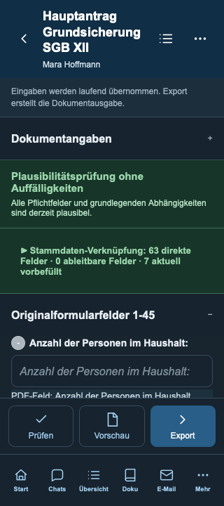
Geöffnete Tastatur
Die Navigation wird ausgeblendet. Die Dokumentaktionen bleiben oberhalb des sichtbaren Tastaturbereichs erreichbar. Sichtbarer Bereich hier simuliert.
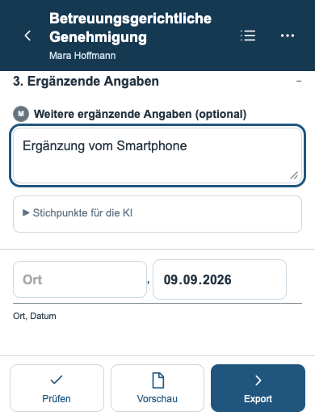
PDF-Vorschau
Der echte PDF-Renderer zeigt den aktuellen Dokumentstand. Anlagen und das vollständige Versandpaket werden unter Export zusammengestellt.
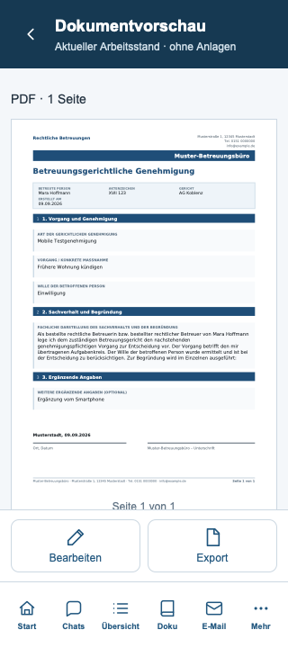
Export auswählen
Die vorhandenen Ausgabearten erhalten große Auswahlflächen und einen festen Abschluss.
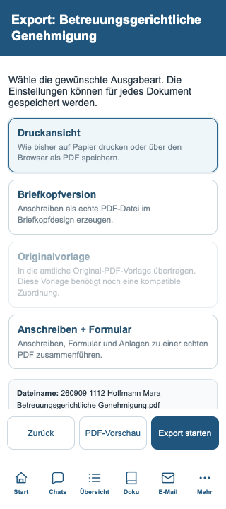
Anschreiben und PDF-Paket
Empfänger, Adressbuch und Paketeinstellungen sind getrennt aufklappbar. Die Exportaktionen bleiben erreichbar.
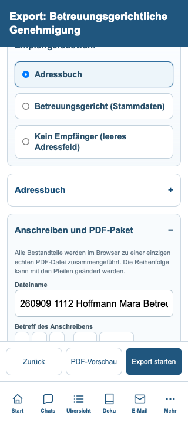
Desktop nach dem Wechsel
Beim Wechsel zur Desktopbreite werden die ursprüngliche Dokumentansicht und Werkzeugleiste wiederhergestellt.
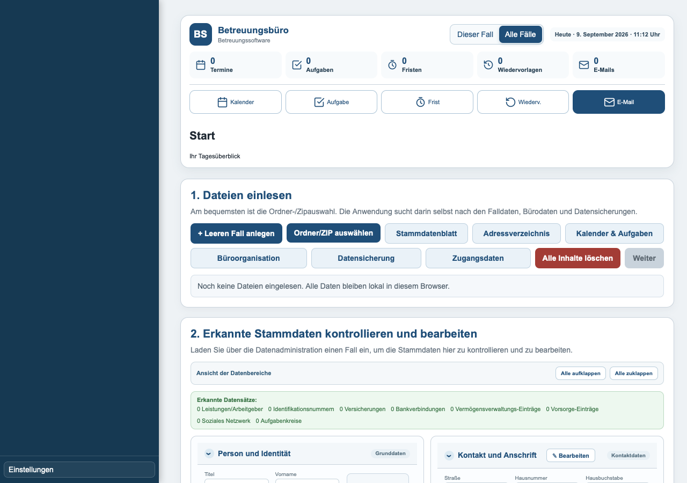